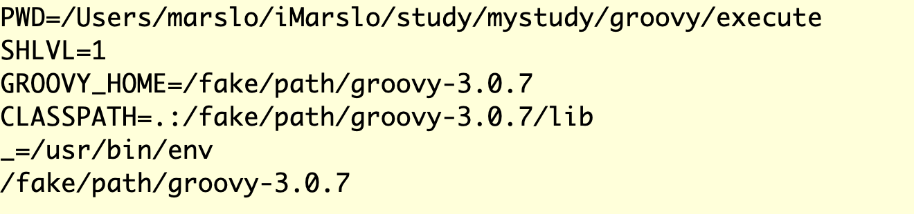

Table of Contents generated with DocToc
reference:
basic
Program structure
Customizable Operators
| Operator | Method |
|---|---|
a + b |
a.plus(b) |
a - b |
a.minus(b) |
a * b |
a.multiply(b) |
a / b |
a.div(b) |
a % b |
a.mod(b) |
a++ or ++a |
a.next() |
assert [ a: true, b: false ] + [ a: false ] == [ a: false, b: false ] assert [ a: true, b: false ] << [ a: false ] == [ a: false, b: false ]
Special Operators
| Operator | Meaning | Name |
|---|---|---|
a ? b : c |
if(a) b else c |
ternary if |
a ?: b |
a ? a : b |
Elvis |
a.?b |
( a==null ) ? a : a.b |
null safe |
a(*list) |
a(list[0], list[1], ...) |
spread |
list*.a() |
[list[0].a, list[1].a, ...] |
spread-out |
a.&b |
reference to method b in object a as closure | method closure |
a.@field |
direct field access | dot-at |
-
def str = 'example of method reference' def fun = str.&toUpperCase assert fun() == str.toUpperCase() println fun() // result EXAMPLE OF METHOD REFERENCEclass Person { String name Integer age } def list = [ new Person( name: 'Bob' , age: 42 ) , new Person( name: 'Julia' , age: 35 ) ] String describe(Person p) { "$p.name is $p.age" } def action = this.&describe def transform( List<Person> elements, Closure action ) { elements.inject([]){ result, e -> result << action(e) result } } println transform( list, action ) // result // [Bob is 42, Julia is 35]
string
substring
remove the last x chars
def removeSuffix( String str ) { removeSuffix( str, 1 ) } /** * remove the last char of {@code str} * @param str the string will be removal the last char * @param c remove last {@code c} numbers chars **/ def removeSuffix( String str, int c ) { str.reverse().drop(c).reverse() }add char(s) in the end of string
str.concat('substr')
list
filter a list
[ 'baz1', 'baz2', 'baz3', 'abz1', 'zba2', 'bza3' ].findAll { it.contains 'baz' }
===> [baz1, baz2, baz3]
- or
[['r':3],['r':5],['r':6],['r':11],['r':10]].findAll { (1..10).contains(it.r) } ===> [[r:3], [r:5], [r:6], [r:10]]
filter in list via additional conditions
[
[ id : 1 , age : 1 , weight : 25 ] ,
[ id : 2 , age : 2 , weight : 20 ] ,
[ id : 3 , age : 3 , weight : 25 ]
].findAll {
it.age in [ 2, 3 ] || it.weight in [ 20, 25 ]
}.id
===> [1,2,3]
return result instead of original list
[1, 2, 3, 4].findResults { ( it % 2 == 0 ) ? it / 2 : null }
===> [1, 2] ~> [2/2, 4/2]
[1, 2, 3, 4].findAll { ( it % 2 == 0 ) ? it / 2 : null }
===> [2, 4]
a list contains a sublist or not
List parent = [ '1', '2', '3', 'a', 'b' ]
List sub = [ 'a', '3' ]
sub.every{ parent.contains(it) }
or
containsAllList parent = [ '1', '2', '3', 'a', 'b' ] List sub = [ 'a', '3' ] parent.containsAll(sub)ignore case
sub.every{ parent.collect{ it.toLowerCase() }.contains( it.toLowerCase() ) }
pickup item in list random
Collections.shuffleList list = [ '1', '2', '3', 'a', 'b' ] Collections.shuffle( list ) println list println parent.first() // result // [2, b, 3, 1, a] // 2Random().nextIntList list = [ '1', '2', '3', 'a', 'b' ] Random random = new Random() println list.get(random.nextInt(list.size())) println list.get(random.nextInt(list.size())) // result // 1 // b
replace item in list according reference Map
Map<String, String> reference = [
'1' : 'apple' ,
'2' : 'banana' ,
'3' : 'pears' ,
'4' : 'peach'
]
'I want 1 she wants 4'.tokenize(' ')
.collect { references.get(it) ?: it }
.join(' ')
// result: I want apple she wants peach
or keeping the
Stringformatreference for
replaceAll("<regex>", "$0")'I like 1, she likes 3.' .replaceAll("[^\\w]", "_\$0") .split('_') .collect { String c = it.trim() reference.get(c) ? it.replace(c, reference.get(c)) : it } .join() // result: I like apple, she likes pears.
remove all punctuation from a String :
'I like 1,_,--__,,___ she liks 2,,...'
.replaceAll("[^\\w\\s]|_", '')
// .replaceAll("\\s+", ' ') // structure space if necessary
===> I like 1 she liks 2
// ===> I like 1 she liks 2
- or keep only comma (and merge more if mutiple comma)
'I like 1,----,,|\\/, she liks 2,,...' .replaceAll("[^\\w\\s,]|_", '') .replaceAll(',+', ',') ===> I like 1, she liks 2,
2D matrix conversion
Objective :
rows and columns conversion in 2D matrix
Map<String, List<String>>
original matrix:
[ 'foo' : [ 'a', 'b', 'c', 'd' ] , 'bar' : [ 'b', 'c', 'x', 'y' ] , 'baz' : [ 'd', 'x', 'y', 'z' ] ]after conversion:
[ 'a' : [ 'foo' ] , 'b' : [ 'bar' , 'foo' ] , 'c' : [ 'bar' , 'foo' ] , 'd' : [ 'baz' , 'foo' ] , 'x' : [ 'bar' , 'baz' ] , 'y' : [ 'bar' , 'baz' ] , 'z' : [ 'baz' ] ]
Inspired from sboardwell/matrix-based-auth.groovy
Map<String, List<String>> after = [:].withDefault { [].toSet() }
Map<String, List<String>> matrix = [
'foo' : [ 'a', 'b', 'c', 'd' ] ,
'bar' : [ 'b', 'c', 'x', 'y' ] ,
'baz' : [ 'd', 'x', 'y', 'z' ]
]
Closure converter = { Map result, Map original ->
original.each { k, v -> result[k] += v }
}
matrix.collect{ k, v -> v.collect{ [ (it) : k ] } }
.flatten()
.each converter.curry(after)
after
print 2D matrix
(1..255).collect { color ->
" █${color}█ "
}.eachWithIndex{ c, idx ->
print c
if ( 4 == (idx+1)%6 ) { println '' }
}
Map
change Map in condition
[ 'a': 1, 'b': 2, 'c': 3 ].collectEntries { ( it.value > 1 ) ? [ "${it.key}" : 4 ] : it }
===> [a:1, b:4, c:4]
- or
[ it.key, 4 ][ 'a': 1, 'b': 2, 'c': 3 ].collectEntries { ( it.value > 1 ) ? [ it.key, 4 ] : it } - or
[ (it.key) : 4 ][ 'a': 1, 'b': 2, 'c': 3 ].collectEntries { ( it.value > 1 ) ? [ (it.key) : 4 ] : it }
filter via condition
[ 'a': 1, 'b': 2, 'c': 3 ].findAll{ it.value > 1 }.collectEntries { [ it.key, 4 ] }
===> [b:4, c:4]
find a string in a nested Map by using recursive function
def hasValue( Map m, String value ) {
m.containsValue(value) || m.values().find { v -> v instanceof Map && hasValue(v, value) }
}
- another version
inspired by stackoverflow: How to search value by key from Map as well as Nested Map
def hasValue( Map m, String value ) {
if ( m.containsValue(value) ) return m.containsValue(value)
m.findResult { k, v -> v instanceof Map ? hasValue(v, value) : null }
}
find a string exists in a list of Map
def isTargetExists( Map m, String subKey, String value ) {
def map = m.findAll { it.value instanceof Map }.collect { it.key }
return m.subMap(map).any { k, v -> v.get(subKey, []).contains(value) }
}
Map<String, Map<String, String>> matrix = [
dev : [
user: ['dev1', 'dev2', 'dev3'] ,
passwd: '123456',
customer: ['yahoo', 'bing']
] ,
staging : [
user: ['stg1', 'stg2', 'stg3'] ,
passwd: 'abcdefg' ,
customer: ['google', 'huawei']
] ,
prod : [
user: ['prod1', 'prod2', 'prod3'] ,
passwd: 'a1b2c3d4'
]
]
assert isTargetExists( matrix, 'user', 'dev4' ) == false
assert isTargetExists( matrix, 'customer', 'huawei' ) == true
elvis operator
if/elseif{if}/else
condition:
- if
fruitsis 'apple' or 'orange', get pre-defined number5(number = 5)- if
fruitsiswatermelon, get particular givennumbers.numbercannot benull
// by using if/elseif{if}/else
Map option = [:]
if ( [ 'apple', 'orange' ].contains(fruits) ) {
option = [ "${fruits}" : '5' ]
} else if ( [ 'watermelon' ].contains(fruits) ) {
if (number) {
option = [ "${fruits}" : number ]
}
} else {
println( 'ERROR: number CANNOT be empty while fruits is watermelon. Exit ...' )
}
// by using elvis operator
Map option = ( [ 'apple', 'orange' ].contains(fruits) ) ? [ "${fruits}" : '5' ]
: ( [ 'watermelon' ].contains(fruits) ) ? ( number )
? [ "${fruits}" : number ]
: println( 'ERROR: number CANNOT be empty while fruits is watermelon. Exit ...' )
: [:]
example
Closure option = { String fruits, String number = '' -> ( [ 'apple', 'orange' ].contains(fruits) ) ? [ (fruits) : '5' ] : ( [ 'watermelon' ].contains(fruits) ) ? ( number ) ? [ (fruits) : number ] : println( 'ERROR: number CANNOT be empty while fruits is watermelon. Exit ...' ) : [:] } assert option('apple') == ['apple' : '5'] assert option('watermelon', '100') == [ 'watermelon' : '100' ]- using
[ "${fruits}" : '5' ], the class of key isclass org.codehaus.groovy.runtime.GStringImpl - using
[ (fruits) : '5' ], the class of key isclass java.lang.String
- using
execute shell commands in groovy
reference
Get STDERR & STDERR
using
new StringBuffer()ornew StringBuilder()i.e.:
def stdout = new StringBuffer(), stderr = new StringBuffer() def proc = "cmd".execute() proc.waitForProcessOutput( stdout, stderr ) int exitCode = proc.exitValue() println( (exitCode == 0) ? stdout : "exit with ${exitCode}. error: ${stderr}" )
def stdout = new StringBuilder(), stderr = new StringBuilder()
def proc = "ls /tmp/NoFile".execute()
proc.consumeProcessOutput( stdout, stderr )
proc.waitForOrKill( 1000 )
int exitCode = proc.exitValue()
println( ( exitCode == 0 ) ? stdout : "error with exit code ${exitCode}.\nSTDERR: ${stderr}" )
def stdout = new StringBuilder(), stderr = new StringBuilder()
def proc = 'ls /tmp/NoFile'.execute()
proc.consumeProcesstdoutput( stdout, stderr )
proc.waitForOrKill(1000)
println( stdout ? "out> \n${stdout}" : '' + stderr ? "err> \n${stderr}" : '' )
Show output during the process
using
System.outandSystem.err
def proc = "ls /tmp/NoFile".execute()
proc.waitForProcessOutput( System.out, System.err )
proc.waitForOrKill(1000)
int exitCode = proc.exitValue()
if ( exitCode != 0 ) {
println "error with exit code ${exitCode}."
}
with environment
def envVars = ["GROOVY_HOME=/fake/path/groovy-3.0.7", "CLASSPATH=.:/fake/path/groovy-3.0.7/lib"]
def proc = './run.sh'.execute( envVars, new File(".") )
proc.waitForProcessOutput( System.out, System.err )
int exitCode = proc.exitValue()
println( (exitCode != 0) ? "exit with ${exitCode}" : '' )
run.shenv echo ${GROOVY_HOME}result 
with system environment
List envVars = System.getenv().collect { k, v -> "${k}=${v}" }
def proc = "./run.sh".execute( envVars, new File(".") )
proc.waitForProcessOutput( System.out, System.err )
int exitCode = proc.exitValue()
println( (exitCode != 0) ? "exit with ${exitCode}" : '' )
with partular path
reference:
def command = "git log -1"
def proc = command.execute( null, new File('/path/to/folder') )
proc.waitFor()
println """
${proc.err.text ?: ''}
${proc.in.text ?: ''}
Process exit code: ${proc.exitValue()}
"""
Closures
references:
A closure definition follows this syntax:
{ [closureParameters -> ] statements }Closure clos = { println "Hello World" } assert clos.call() == clos() | + implicit call + explicit call
Closure VS. Method
closures have benefits over regular methods and are a powerful feature of Groovy:
- We can pass a Closure as an argument to a method
- Unary closures can use the implicit it parameter
- We can assign a Closure to a variable and execute it later, either as a method or with call
- Groovy determines the return type of the closures at runtime
- We can declare and invoke closures inside a closure
- Closures always return a value
method
def formatToLowerCase( String name ) { name.toLowerCase() }closure
def formatToLowerCaseClosure = { name -> name.toLowerCase() }
break from closure
tips:
returnmeans continuereturn truemeans break the loop
def list = [1, 2, 3, 4, 5]
list.any { element ->
if (element == 2)
return // continue
println element
if (element == 3)
return true // break
}
Curry
left curry
def multiply = { x, y -> return x * y } def triple = multiply.curry(3) // triple = { y -> return 3 * y }example
def nCopies = { int n, String... str -> str.join('')*n } def twice = nCopies.curry(2) println twice('|', '\\', '|', '/' ) assert twice('|', '\\', '|', '/' ) == nCopies( 2, '|', '\\', '|', '/' )- result
|\|/|\|/
- result
others left curry
def multiConcat = { int n, String... args -> args.join('')*n } multiConcat( 3, '*', '-', '=' )- result
*-=*-=*-=
- result
right curry
def nCopies = { int n, String str -> str*n } def twice = nCopies.rcurry( '*-=*=-*' ) println twice(2) assert twice(2) == nCopies( 2, '*-=*=-*' )- result
*-=*=-**-=*=-*
- result
def nCopies = { int n, String str -> str*n }
def twice = nCopies.rcurry( '*-=*=-*' )
def divider = nCopies.curry( 2 )
assert nCopies( 2, '*-=*=-*' ) == twice( 2 ) // right curry
assert nCopies( 2, '-.-.-.-' ) == divider( '-.-.-.-' ) // left curry
- index with curry
def volume = { int l, int w, int h -> "l: ${l}\nw: ${w}\nh: ${h}" } def fixedWidthVolume = volume.ncurry(1, 2) println fixedWidthVolume( 3, 4 )- result
l: 3 w: 2 h: 4
- result
Memoization
Fibonacci suite :
fib(15)==fib(14)+fib(13)fib(14)==fib(13)+fib(12)
slow
def fib fib = { long n -> n<2 ? n : fib(n-1) + fib(n-2) } println fib(10) // result 55fast
tips:
Closures.memoize()def fib fib = { long n -> n<2 ? n : fib(n-1) + fib(n-2) }.memoize() fib(50) // result 12586269025
composition
double composition
def plus2 = { it + 2 }
def times3 = { it * 3 }
def times3plus2 = plus2 << times3
// | + execute first
// + execute second
// result
assert times3plus2(3) == 3*3+2
assert times3plus2(3) == plus2(times3(3))
def plus2times3 = plus2 >> times3
// | + execute last
// + execute first
// result
assert plus2times3(3) == (3+2)*3
assert plus2times3(3) == times3(plus2(3))
assert ( plus2 << times3 )(3) == ( times3 >> plus2 )(3)
| + execute first | + execute last
+ execute last + execute first
-
def map1 = [a: 10, b:2, c:3] def map2 = [b:3, c:2, d:5] def maps = [map1, map2] def process(def maps, Closure myLambda) { maps.sum { it.keySet() }.collectEntries { key -> [ key, { x -> x.subList(1, x.size()).inject(x[0], myLambda) }(maps.findResults { it[key] }) ] } } def sumResult = process(maps) { a, b -> a + b } def prodResult = process(maps) { a, b -> a * b } def minResult = process(maps) { a, b -> a < b ? a : b } assert sumResult == [a:10, b:5, c:5, d:5] assert prodResult == [a:10, b:6, c:6, d:5] assert minResult == [a:10, b:2, c:2, d:5]- Resolution
assert [2,4,5].inject(1){ a, b -> a + b } == 12 assert [2,4,5].inject(1, { a, b -> a + b }) == 12
- Resolution
triple composition
def multiply = { x, y -> return x * y }
def triple = multiply.curry(3)
def quadruple = multiply.curry(4)
def composition = { f, g, x -> return f(g(x)) }
def twelveTimes = composition.curry(triple, quadruple) // twelveTimes = { y -> composition { y -> 3*(4*y) } }
def threeDozen = twelveTimes(3)
Methods
various method to call closure
def work( String input, Closure cl ) { cl(input) } Closure assertJava = { it == 'Java' } println work( "Java", assertJava ) println work("Java", { it == 'Java' }) // ==> work 'Java', { it == 'Java' } println work( 'Java' ){ it == 'Java' }frequent usage
def on( String name, String dString = 'is' ) { [ skip: { -> println "no params. skip" }, foo: { String f, Map fmap -> foo( name, dString, f, fmap ) [ bar: { Map map -> bar( '', map ) } ] } , bar: { Map map -> bar( name, map ) } ] } def reset( Map m ) { m.collect{ k, v -> "${k} : ${v}" }.join('\n') } def foo( String n, String ds, String f, Map m ) { println "${n} ${ds} ${f} !\ndetails :\n\t\t${reset(m)}" } def bar( String n = '', Map m ) { println "${n ? "${n}\n": ''}\t\t${reset(m)}" }result
on('marslo') .foo( 'awesome', [ 'age' : 34 ] ) .bar( ['gender' : 'female' ] ) // result marslo is awesome ! details : age : 34 gender : female
or
on('marslo') .skip() // result no params. skip
tricky
thisclass Enclosing { void run() { def whatIsThisObject = { getThisObject() } assert whatIsThisObject() == this def whatIsThis = { this } assert whatIsThis() == this } } Enclosing e = new Enclosing() e.run()